Content First. Story Always.
深耕影视与新媒体内容创作，参与头部综艺项目制作，具备脚本策划、导演思维与全流程执行能力；拥有 AIGC 创作、短剧出海及海外内容运营经验，擅长将创意转化为兼具叙事力与传播力的内容。
“隐居都市处理灵异事件的九叔师徒，为送小僵尸与生父团聚而卷入一场豪门阴谋。”
某老街道外区，九叔带着徒弟秋生、文才以萨满古法处理灵异怪谈。小僵尸是十五年前被遗弃在店门口的婴孩，九叔将他收留，四人早已是不可分割的家人。 某日，富商林天泽派人登门，声称小僵尸是他失散多年的亲生骨肉，并承诺能让他如常人般站在阳光下。九叔犹豫再三，最终决定亲自护送小僵尸前往长白山脚下的林氏庄园。 抵达庄园后，林天泽极尽慈爱，小僵尸短暂沉浸于父爱的幻梦中。然而九叔和秋生很快察觉异样——庄园下人的异状、纸飞机无意间勾出的阵法符文，都指向一个阴毒的引魂聚阴阵。真相逐渐浮出水面：四十年前林天泽身患绝症，走投无路之下以散布子嗣、骨肉炼命的邪法为自己续命，数十个亲生孩子的尸骨葬于庄园之下。小僵尸是唯一的意外，被弃养后在九叔身边孕育出了极品法器玲珑心——林天泽引师徒入庄，真实目的是剖心炼药。 林天泽以生母魂魄为饵诱小僵尸入阵，九叔三人拼死破阵却被击倒。危急关头，小僵尸凭玲珑心感应识破谎言，拒绝献心。林天泽疯狂扑来，小僵尸主动催动玲珑心将其反噬化为飞灰。九叔以送亡神歌超度地下十八个孩子怨灵，小僵尸对他们轻声告别。四人走出庄园，长白山清晨的阳光下，小僵尸呵出了第一口白气——他终于像活人一样呼吸了。师徒四人并排走入阳光，脚印在雪地上向前延伸。
九叔（60岁）： 从业四十余年的关东老萨满，少年时四处讨生活屡屡碰壁，后拜入长白山一支民间萨满门派，成为这一脉最后一位关门弟子。在哈尔滨道外区颇有名望，街坊不管是宅子闹鬼、牲口染病、运道不顺，都来找他问事。九叔定下死规矩：绝不给心存恶念的人办事。
小僵尸（15岁）： 看着七岁，实际十五岁。身形瘦小，面色发青，笑的时候露出两颗虎牙。十五年前被人遗弃在问事堂门口，九叔看出他命不该绝，收了回来。一辈子没出过远门，没去过比道外区更远的地方。平时坐店、吃血肠、装僵尸吓走心怀不轨的客人。
文才（22岁）： 初中迷上灵异论坛，顺着帖子找到店里来。入门最晚，本事最差，贪财怕死嘴上没把门，外出办事时总会躲在师父和秋生身后，打完架抓花生酥塞嘴里。但真到顶不住的时候他没有跑过。
秋生（28岁）： 二十八岁，汉语言文学本科毕业，是老算命先生引荐来拜师的。记性极好，入门七天背完所有神歌咒语和画符口诀，脑子比动手快。平时话不多，不争不抢，但遇到事他是最稳的那一个。
“一对男女醒来后被困陌生房间，发现自己也随之失忆，而生的出口只容一人通过。”
一对失去记忆的男女突然在封闭的房间中醒来，面对电脑屏幕上“只有一个人能活着走出房间”的生死倒计时规则，两人从最初的和平防备演变为激烈的互相残杀。在殊死搏斗中，女人用围巾将男人勒死，然而当门终于打开、阳光照进来的一瞬间，女人恢复了记忆，惊恐而绝望地发现被自己亲手杀死的陌生男人正是自己的爱人。
男人（22岁）： 在校大学生，理智隐忍，格外看重恋人，生死关头会优先保全自身与心中牵挂，行事果决甚至不择手段。
女人（20岁）： 天性温柔心软，心存善意，遇事总抱有转机幻想，不到绝境不会主动选择伤害他人。
“温情治愈系竞技真人秀，强调“手艺传递温度，食物连接人心”。”
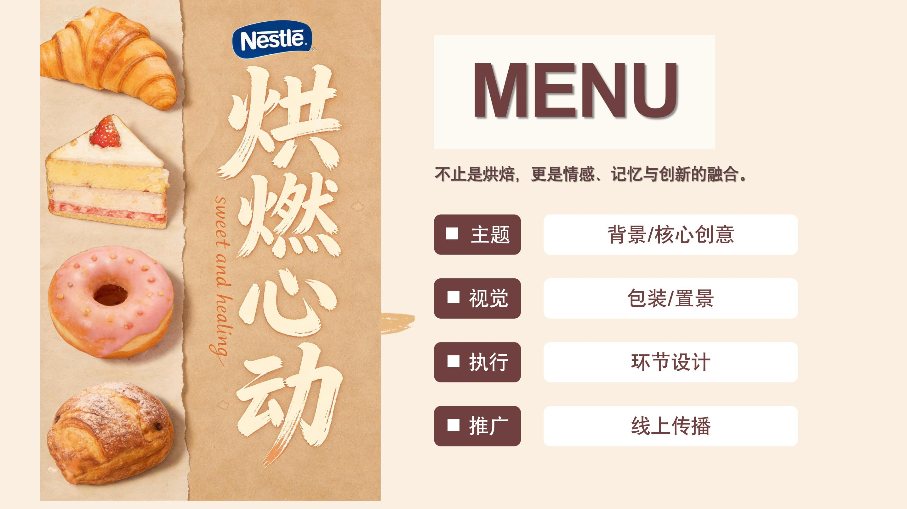
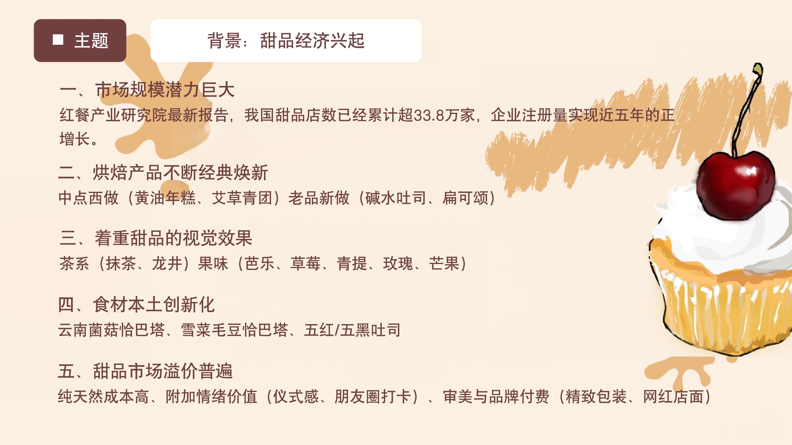
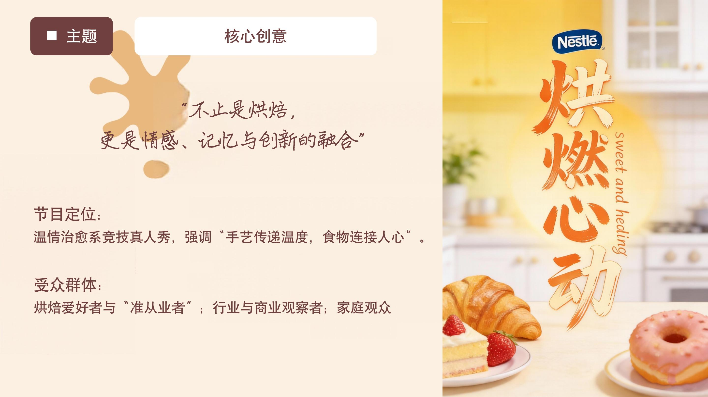
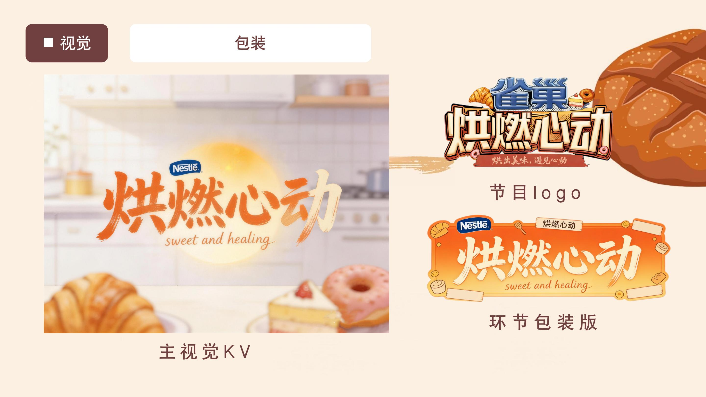
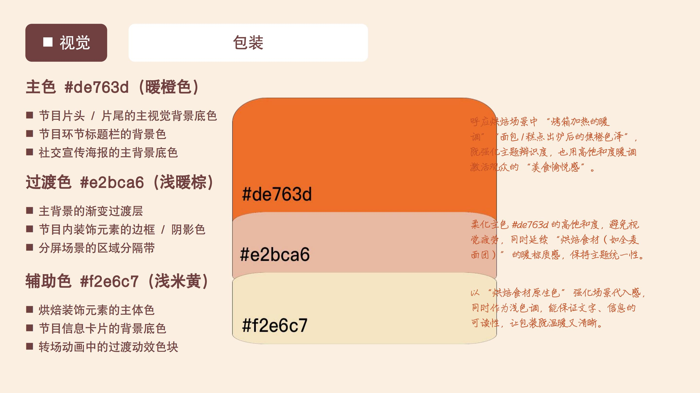
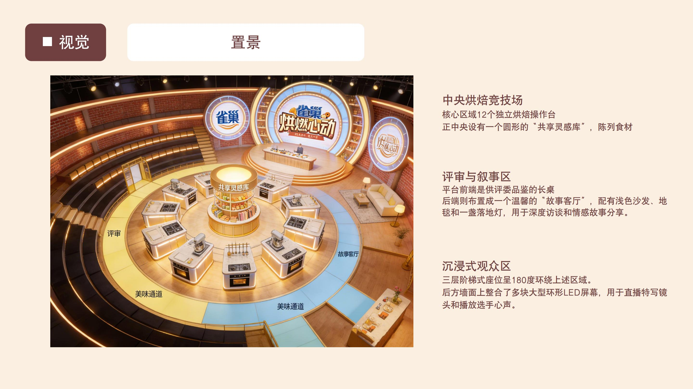
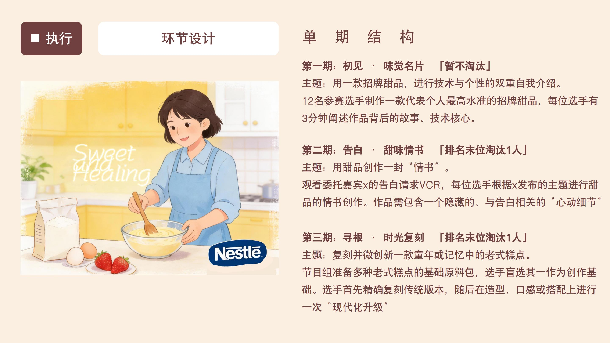
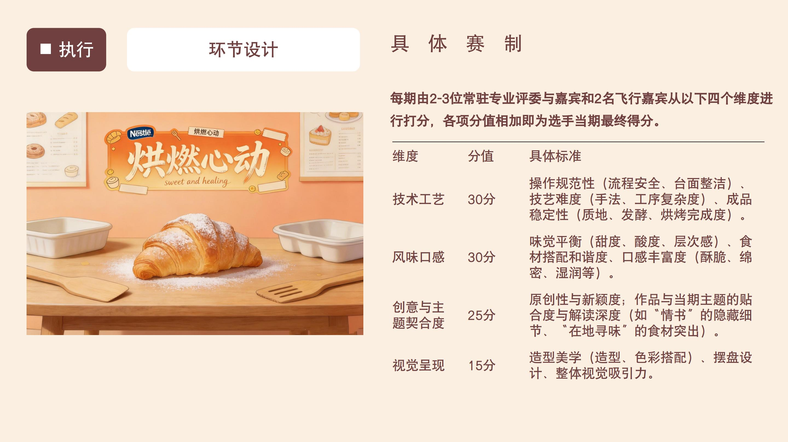
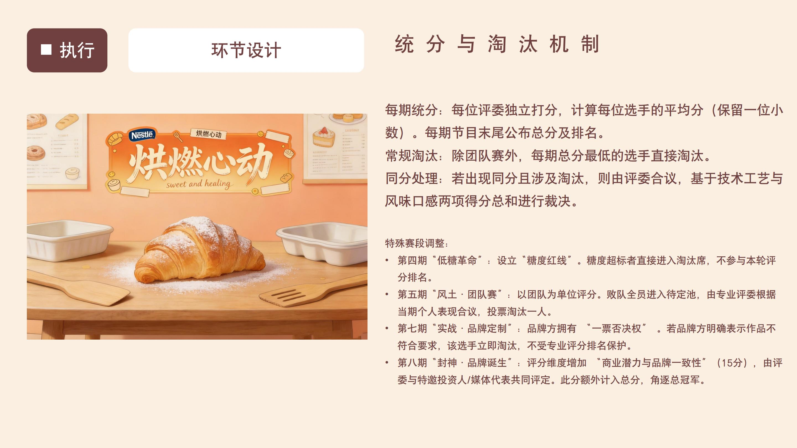
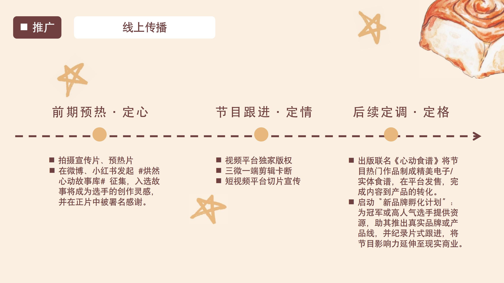
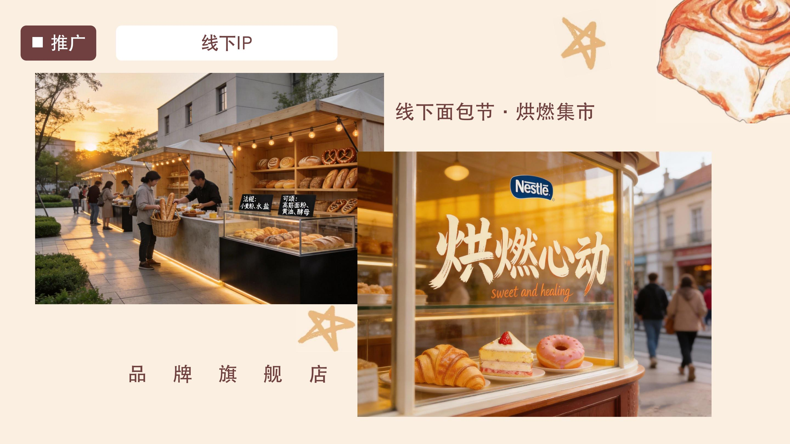
节目类型： 实景剧情生存推理真人秀 / 虚拟硬核竞技
受众定位： 16-35岁 剧本杀、科幻、硬核游戏爱好者及年轻潮流群体
拟邀嘉宾： 一线顶流智商担当艺人 + 头部电竞战队选手 + 科技圈头部KOL
引入全真全息光影技术，每一期节目将在不同的“时空碎片”中展开。嘉宾不仅需要面对实景猎人的抓捕，还需要通过AR眼镜破解隐藏在赛场各个角落的数字谜题。